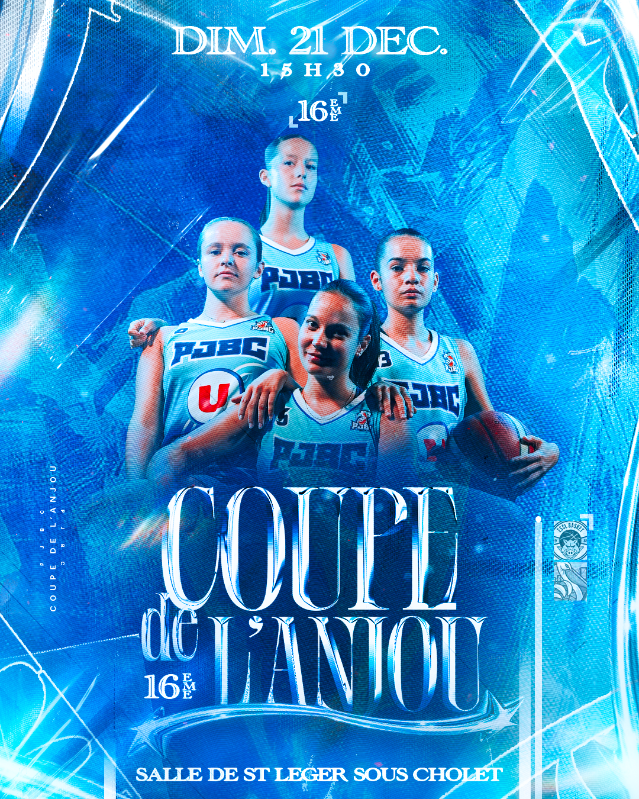
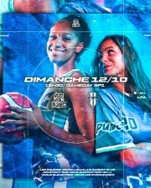
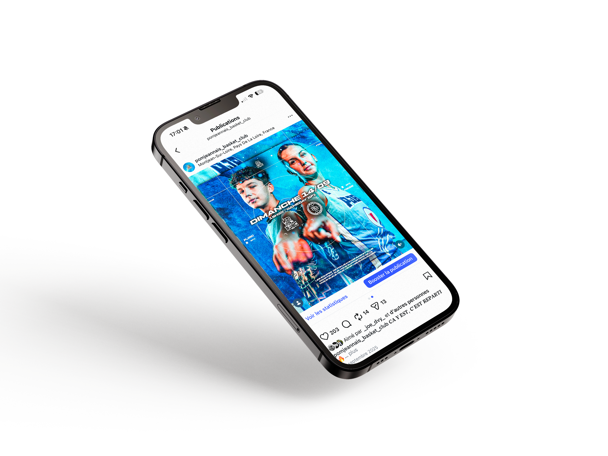
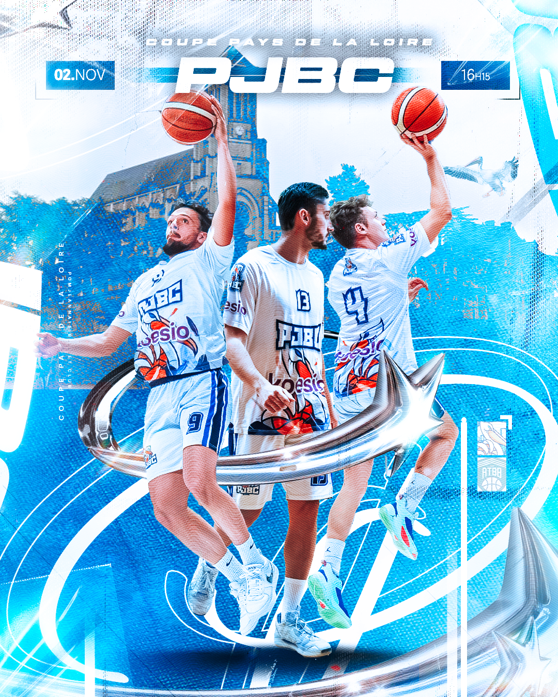
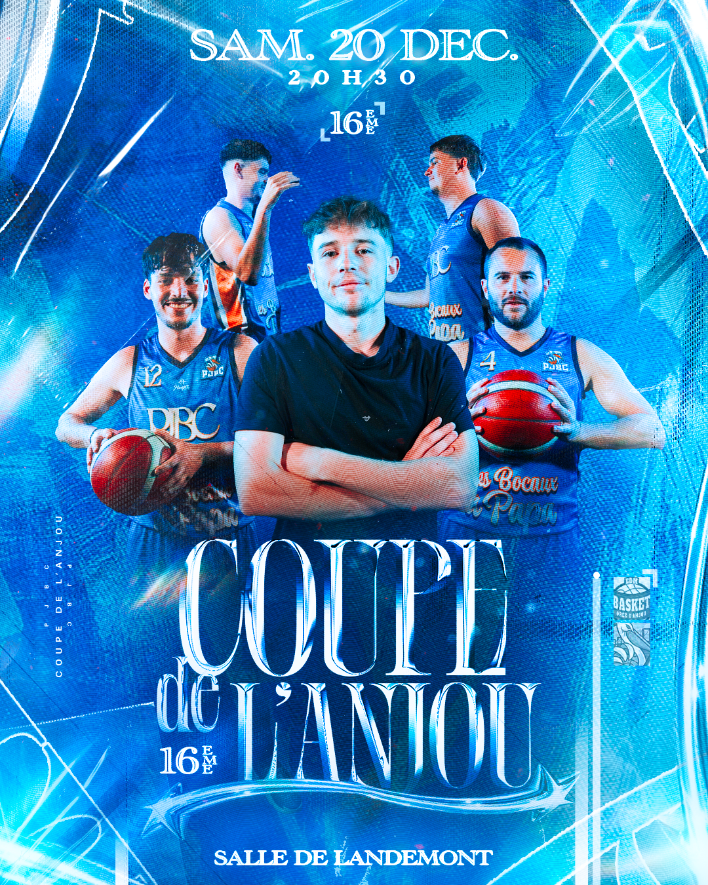
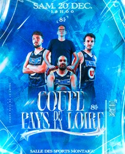
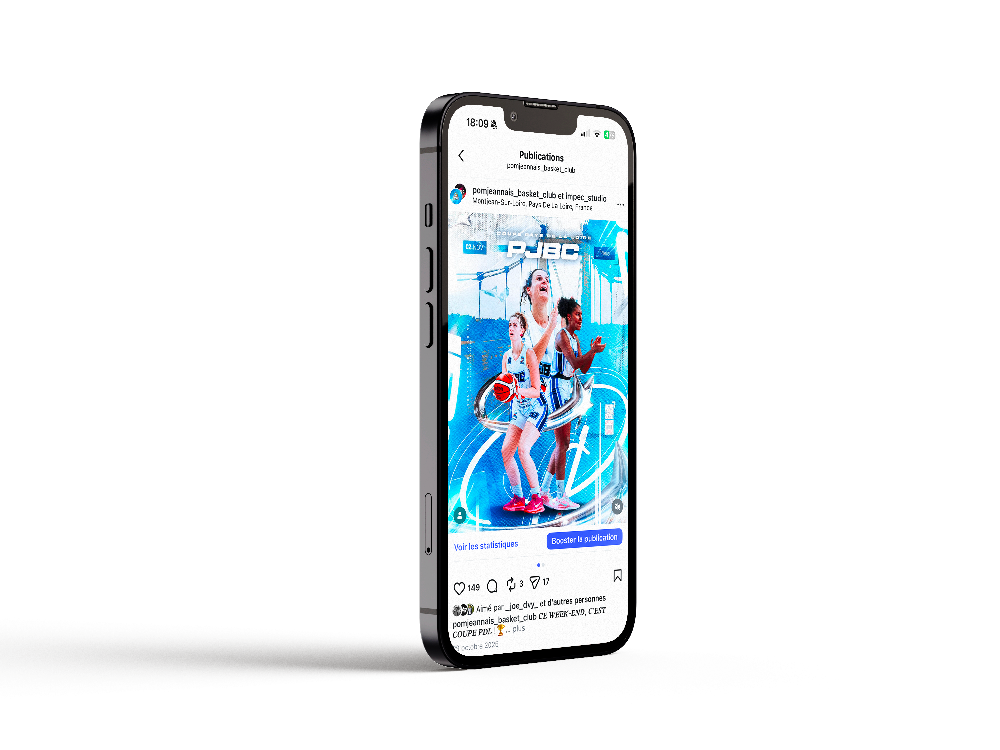

Le projet
Une direction visuelle plus forte, plus lisible, plus impactante
Pour ce projet, l’objectif était de construire une identité visuelle capable d’exister sur plusieurs supports tout en gardant une vraie cohérence : affiches, réseaux sociaux, stories, visuels d’événements et communication globale.
Le travail a été pensé pour renforcer l’image du club, moderniser sa présence visuelle et créer des compositions capables d’attirer l’œil immédiatement.


Déclinaisons
Un système graphique pensé pour vivre sur plusieurs formats
L’objectif n’était pas de créer un seul visuel fort, mais une direction capable de se décliner sur des affiches, des publications et des formats événementiels tout en gardant une identité immédiatement reconnaissable.

Univers visuel
Un équilibre entre impact, rythme et cohérence
La construction des compositions, les contrastes, les lumières, la typographie et les éléments graphiques permettent de garder une lecture forte tout en variant les mises en page selon les supports.






Contact
Tu veux une identité visuelle qui marque vraiment ?
On peut construire ensemble un univers graphique cohérent, impactant et pensé pour ton projet.